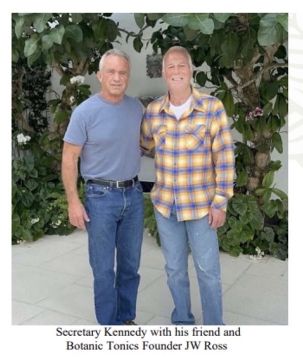
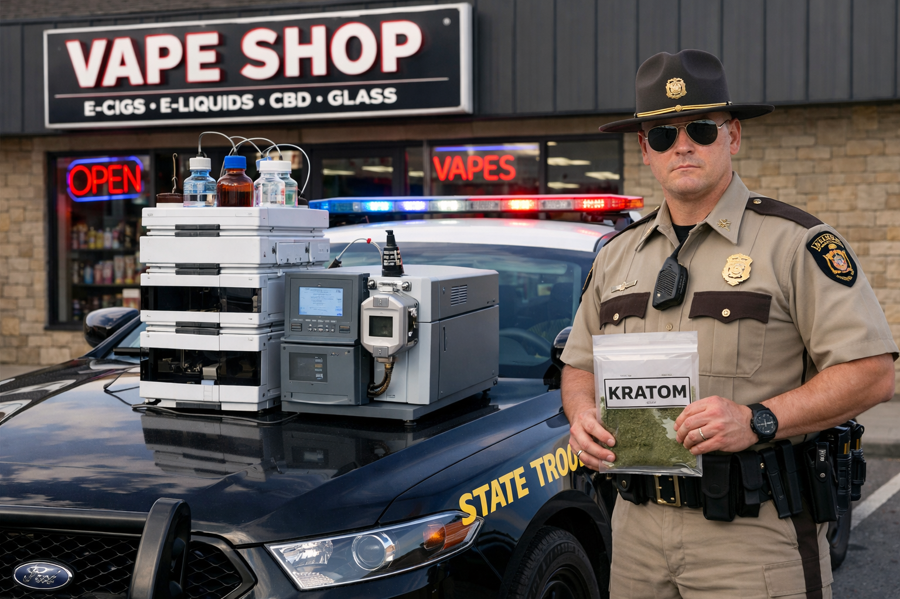
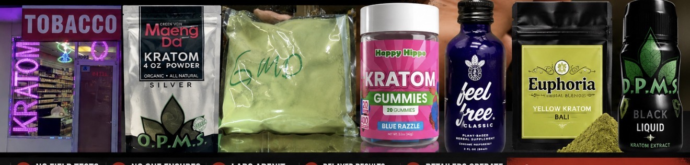

The Drug Enforcement Administration has taken an important step by proposing to temporarily place high-concentration 7-hydroxymitragynine (7-OH) into Schedule I above specified thresholds. The proposal recognizes what has become increasingly obvious: concentrated 7-OH products are potent opioids, have no accepted medical use, present serious risks including dependence and respiratory depression, and are being aggressively marketed in smoke shops and gas stations.
But the proposal also exposes a deeper contradiction.
The DEA acknowledges throughout its notice that 7-OH is a naturally occurring alkaloid in kratom, that it is formed in the body after mitragynine is consumed, and that manufacturers can chemically convert mitragynine into 7-OH.
Then it leaves raw leaf kratom and mitragynine largely untouched for reasons unknown.

The rule sets numerical limits for 7-OH concentrations and attempts to distinguish between products below and above those thresholds.
Who is going to verify that?

No patrol officer is carrying an LC-MS/MS system in the trunk of a cruiser. Testing requires sophisticated laboratory equipment, trained analysts, and time. By the time laboratory results return, the product has already been sold to hundreds of customers. The practical reality is simple:
The DEA correctly describes how 7-OH can be produced from mitragynine through relatively simple chemical conversion and notes that concentrated commercial products have proliferated rapidly.
If one formulation disappears, manufacturers redesign products. If one threshold is established, products are formulated just below it or marketed differently. If one molecule is controlled while the parent alkaloid remains widely available, chemistry does the rest.
Ironically, the proposal spends page after page describing problems that extend well beyond isolated 7-OH products, such as:

Those are characteristics of the broader commercial kratom market—not simply one isolated molecule.
The document repeatedly describes an industry that has evolved far beyond powdered leaves sold in Southeast Asia, yet the regulatory response targets only part of that evolution.
The measure of this policy will not be the headlines announcing a Schedule I action.
It will be what happens afterward.
Read the full DEA notice:
DEA Temporarily Schedule 7-OH and Related Substances to Protect Public →